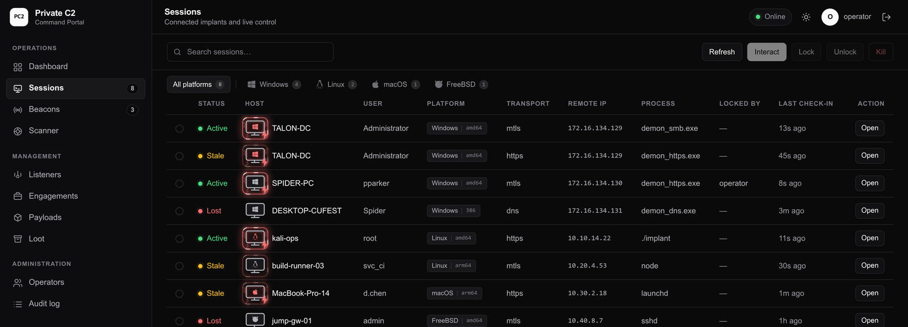
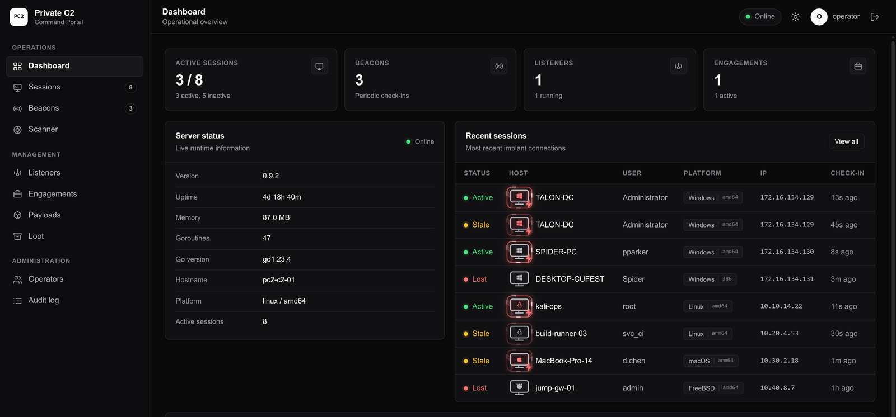

<title>Private-C2</title>
<meta name="claude:viewport-fit-sides" content="cover">
<link rel="preconnect" href="https://fonts.googleapis.com">
<link rel="preconnect" href="https://fonts.gstatic.com" crossorigin>
<link rel="stylesheet" href="https://fonts.googleapis.com/css2?family=IBM+Plex+Mono:wght@400;500&amp;family=IBM+Plex+Sans+Condensed:wght@600;700&amp;family=IBM+Plex+Sans:wght@400;500;600&amp;display=swap">
<style>
  /* Layout: dossier-style single column, hairline-ruled sections, spec strip in the hero. */
  :root {
    --bg: #eef1f4;
    --surface: #ffffff;
    --ink: #171b21;
    --muted: #4f5965;
    --line: #d5dbe2;
    --accent: #b23a1f;
    --steel: #2e5a78;
    --font-display: "IBM Plex Sans Condensed", "Arial Narrow", Arial, sans-serif;
    --font-body: "IBM Plex Sans", system-ui, -apple-system, "Segoe UI", sans-serif;
    --font-mono: "IBM Plex Mono", ui-monospace, SFMono-Regular, Menlo, monospace;
  }
  @media (prefers-color-scheme: dark) {
    :root:not([data-theme="light"]) {
      --bg: #0d1218;
      --surface: #141b23;
      --ink: #e8edf3;
      --muted: #9aa6b4;
      --line: #26313d;
      --accent: #ff7c5c;
      --steel: #8fb8d8;
      color-scheme: dark;
    }
  }
  :root[data-theme="dark"] {
    --bg: #0d1218;
    --surface: #141b23;
    --ink: #e8edf3;
    --muted: #9aa6b4;
    --line: #26313d;
    --accent: #ff7c5c;
    --steel: #8fb8d8;
    color-scheme: dark;
  }

  *, *::before, *::after { box-sizing: border-box; }
  html { -webkit-text-size-adjust: 100%; }
  body {
    margin: 0;
    padding-left: max(16px, env(safe-area-inset-left, 0px));
    padding-right: max(16px, env(safe-area-inset-right, 0px));
    background: var(--bg);
    color: var(--ink);
    font-family: var(--font-body);
    font-size: 16px;
    line-height: 1.6;
    -webkit-font-smoothing: antialiased;
  }
  .wrap { max-width: 1060px; margin: 0 auto; }
  a { color: var(--accent); text-decoration-thickness: 1px; text-underline-offset: 3px; }
  :focus-visible { outline: 2px solid var(--accent); outline-offset: 3px; }

  .topbar { border-bottom: 1px solid var(--line); }
  .topbar-inner {
    display: flex; align-items: center; justify-content: space-between;
    gap: 16px; padding-block: 18px;
  }
  .wordmark {
    display: flex; align-items: center; gap: 10px;
    font-family: var(--font-mono); font-weight: 500; font-size: 13px;
    letter-spacing: 0.14em;
  }
  .mark { width: 9px; height: 9px; background: var(--accent); display: inline-block; flex: none; }
  .repo {
    font-family: var(--font-mono); font-size: 12px; letter-spacing: 0.04em;
    color: var(--muted); text-decoration: none; white-space: nowrap;
    border-bottom: 1px solid transparent;
  }
  .repo:hover { color: var(--accent); border-bottom-color: var(--accent); }

  .hero { padding-block: clamp(56px, 9vw, 104px) clamp(40px, 6vw, 64px); }
  .eyebrow {
    display: flex; align-items: center; gap: 10px;
    margin: 0 0 22px;
    font-family: var(--font-mono); font-size: 11.5px; letter-spacing: 0.16em;
    text-transform: uppercase; color: var(--accent);
  }
  .eyebrow::before { content: ""; width: 22px; height: 1px; background: var(--accent); flex: none; }
  h1 {
    margin: 0; max-width: 15ch;
    font-family: var(--font-display); font-weight: 600;
    font-size: clamp(46px, 7.4vw, 92px); line-height: 0.97; letter-spacing: -0.015em;
    text-wrap: balance;
  }
  .lede {
    margin: 26px 0 0; max-width: 64ch;
    font-size: clamp(16.5px, 2vw, 19.5px); line-height: 1.55; color: var(--muted);
  }
  .lede strong { color: var(--ink); font-weight: 500; }

  .specs {
    display: grid; grid-template-columns: repeat(4, 1fr);
    margin-top: clamp(40px, 6vw, 60px);
    border-top: 1px solid var(--line); border-bottom: 1px solid var(--line);
  }
  .spec { padding-block: 20px; padding-right: 16px; min-width: 0; }
  .spec + .spec { border-left: 1px solid var(--line); padding-left: 20px; }
  .spec b {
    display: block; font-family: var(--font-mono); font-weight: 500;
    font-size: clamp(24px, 3vw, 32px); line-height: 1.1;
    font-variant-numeric: tabular-nums;
  }
  .spec span {
    display: block; margin-top: 6px;
    font-family: var(--font-mono); font-size: 10.5px; letter-spacing: 0.12em;
    text-transform: uppercase; color: var(--muted);
  }

  section.block { border-top: 1px solid var(--line); padding-block: clamp(48px, 7vw, 72px); }
  .section-head { margin-bottom: 28px; }
  .kicker {
    margin: 0 0 10px; font-family: var(--font-mono); font-size: 11px;
    letter-spacing: 0.16em; text-transform: uppercase; color: var(--muted);
  }
  h2 {
    margin: 0; font-family: var(--font-display); font-weight: 600;
    font-size: clamp(30px, 4.4vw, 46px); line-height: 1.02; letter-spacing: -0.01em;
    text-wrap: balance;
  }
  .section-lede { margin: 14px 0 0; max-width: 68ch; color: var(--muted); font-size: 16.5px; }

  .flow {
    display: grid; grid-template-columns: 1fr auto 1fr auto 1fr;
    align-items: stretch; gap: 12px; margin-top: 36px;
  }
  .node {
    border: 1px solid var(--line); background: var(--surface);
    padding: 18px 18px 20px; min-width: 0;
  }
  .node h3 {
    margin: 0 0 10px; font-family: var(--font-mono); font-size: 11.5px;
    letter-spacing: 0.12em; text-transform: uppercase; color: var(--accent);
  }
  .node p { margin: 0; font-size: 13.5px; color: var(--muted); line-height: 1.5; }
  .node ul { margin: 12px 0 0; padding: 0; list-style: none; font-family: var(--font-mono); font-size: 12px; }
  .node li { margin-top: 5px; overflow-wrap: anywhere; }
  .node li::before { content: "·"; color: var(--accent); margin-right: 8px; }
  .arrow {
    display: flex; align-items: center; justify-content: center;
    font-family: var(--font-mono); font-size: 18px; color: var(--accent);
  }
  .chips { display: flex; flex-wrap: wrap; gap: 8px; margin-top: 22px; }
  .chip {
    font-family: var(--font-mono); font-size: 11.5px; letter-spacing: 0.03em;
    border: 1px solid var(--line); background: var(--surface);
    padding: 5px 10px; color: var(--muted);
  }
  .chip b { color: var(--ink); font-weight: 500; }
  .note { margin: 18px 0 0; max-width: 74ch; font-size: 14px; color: var(--muted); }
  .note code { font-family: var(--font-mono); font-size: 12.5px; color: var(--ink); }

  .pipeline { display: flex; flex-wrap: wrap; align-items: center; gap: 8px; margin-top: 20px; }
  .pstep {
    font-family: var(--font-mono); font-size: 11.5px; padding: 5px 10px;
    border: 1px solid var(--line); background: var(--surface); color: var(--ink);
  }
  .parr { font-family: var(--font-mono); font-size: 12px; color: var(--accent); }
  .figure-label {
    margin: 20px 0 0; font-family: var(--font-mono); font-size: 10.5px;
    letter-spacing: 0.08em; text-transform: uppercase; color: var(--muted);
  }
  .shots { display: grid; gap: 34px; margin-top: 34px; }
  .shot { margin: 0; min-width: 0; }
  .shot img {
    display: block; width: 100%; height: auto;
    border: 1px solid var(--line); border-radius: 4px; background: var(--surface);
  }
  .shot figcaption {
    margin-top: 10px; font-family: var(--font-mono); font-size: 10.5px;
    letter-spacing: 0.08em; text-transform: uppercase; color: var(--muted);
  }

  .mechanisms {
    display: grid; grid-template-columns: repeat(auto-fit, minmax(280px, 1fr));
    gap: 28px 40px; margin-top: 8px;
  }
  .mech { border-top: 1px solid var(--line); padding-top: 16px; min-width: 0; }
  .mech h3 { margin: 0; font-size: 16.5px; font-weight: 600; line-height: 1.35; }
  .mech p { margin: 7px 0 0; font-size: 14.5px; color: var(--muted); line-height: 1.55; }
  .mech .detail {
    display: block; margin-top: 10px;
    font-family: var(--font-mono); font-size: 10.5px; letter-spacing: 0.08em;
    text-transform: uppercase; color: var(--accent);
  }

  .caps {
    display: grid; grid-template-columns: repeat(auto-fit, minmax(250px, 1fr));
    gap: 30px 40px; margin-top: 8px;
  }
  .cap { border-top: 1px solid var(--line); padding-top: 16px; min-width: 0; }
  .cap h3 { margin: 0; font-size: 16.5px; font-weight: 600; line-height: 1.35; }
  .cap p { margin: 7px 0 0; font-size: 14.5px; color: var(--muted); line-height: 1.55; }
  .cap .detail {
    display: block; margin-top: 10px;
    font-family: var(--font-mono); font-size: 10.5px; letter-spacing: 0.08em;
    text-transform: uppercase; color: var(--accent);
  }

  .table-wrap {
    margin-top: 18px; border: 1px solid var(--line); background: var(--surface);
    overflow-x: auto;
  }
  table { border-collapse: collapse; width: 100%; min-width: 560px; }
  th, td {
    text-align: left; padding: 10px 14px;
    border-bottom: 1px solid var(--line); font-size: 13.5px; vertical-align: top;
  }
  th {
    font-family: var(--font-mono); font-size: 10.5px; letter-spacing: 0.1em;
    text-transform: uppercase; color: var(--muted); font-weight: 500;
  }
  td:first-child { font-family: var(--font-mono); font-size: 12px; white-space: nowrap; color: var(--ink); }
  tr:last-child td { border-bottom: none; }

  .surfaces { display: grid; grid-template-columns: repeat(3, 1fr); gap: 28px; margin-top: 8px; }
  .surface { border-top: 1px solid var(--line); padding-top: 16px; min-width: 0; }
  .surface h3 { margin: 0 0 4px; font-size: 16.5px; font-weight: 600; }
  .surface .sub { margin: 0 0 10px; font-family: var(--font-mono); font-size: 10.5px; letter-spacing: 0.08em; text-transform: uppercase; color: var(--accent); }
  .surface ul { margin: 0; padding: 0; list-style: none; }
  .surface li {
    font-size: 14px; color: var(--muted); padding-block: 6px;
    border-bottom: 1px solid var(--line); overflow-wrap: anywhere;
  }
  .surface li:last-child { border-bottom: none; }
  .surface li code { font-family: var(--font-mono); font-size: 12px; color: var(--ink); }

  .guards {
    display: grid; grid-template-columns: repeat(auto-fit, minmax(280px, 1fr));
    gap: 0 44px; margin: 8px 0 0;
  }
  .guard { border-top: 1px solid var(--line); padding-block: 18px 6px; min-width: 0; }
  .guard dt {
    display: flex; gap: 10px; align-items: baseline;
    font-weight: 600; font-size: 15.5px;
  }
  .guard dt::before { content: "\25A0"; font-size: 8px; color: var(--accent); flex: none; }
  .guard dd { margin: 6px 0 0 18px; font-size: 14.5px; color: var(--muted); line-height: 1.55; }

  .code-card { margin-top: 12px; border: 1px solid var(--line); background: var(--surface); }
  .code-head {
    display: flex; align-items: center; justify-content: space-between; gap: 12px;
    padding: 10px 14px; border-bottom: 1px solid var(--line);
  }
  .code-head span {
    font-family: var(--font-mono); font-size: 11px; letter-spacing: 0.1em;
    text-transform: uppercase; color: var(--muted);
  }
  .copy {
    font-family: var(--font-mono); font-size: 10.5px; letter-spacing: 0.08em;
    text-transform: uppercase; background: transparent; color: var(--ink);
    border: 1px solid var(--line); padding: 5px 10px; cursor: pointer;
  }
  .copy:hover { border-color: var(--accent); color: var(--accent); }
  pre {
    margin: 0; padding: 18px; overflow-x: auto;
    font-family: var(--font-mono); font-size: 13px; line-height: 1.7;
    color: var(--ink); tab-size: 2;
  }
  pre .c { color: var(--muted); }
  .run-note { margin: 16px 0 0; max-width: 74ch; font-size: 14px; color: var(--muted); }
  .run-note code {
    font-family: var(--font-mono); font-size: 12.5px; color: var(--ink);
    background: var(--surface); border: 1px solid var(--line); padding: 1px 5px;
  }

  .status-grid { display: grid; grid-template-columns: 1fr 1fr; gap: 0 48px; margin-top: 8px; }
  .status-col { min-width: 0; }
  .status-col h3 {
    margin: 0 0 6px; padding-top: 16px; border-top: 1px solid var(--line);
    font-family: var(--font-mono); font-size: 11px; letter-spacing: 0.14em;
    text-transform: uppercase; color: var(--muted);
  }
  .status-col ul { list-style: none; margin: 0; padding: 0; }
  .status-col li {
    display: flex; gap: 10px; padding-block: 9px;
    border-bottom: 1px solid var(--line); font-size: 14.5px;
  }
  .status-col .dot { font-family: var(--font-mono); font-size: 11px; line-height: 1.7; flex: none; }
  .live .dot { color: var(--accent); }
  .pending .dot { color: var(--steel); }

  footer { border-top: 1px solid var(--line); padding-block: 36px 56px; }
  footer p { margin: 0 0 12px; font-size: 13px; color: var(--muted); max-width: 74ch; }
  footer .mono { font-family: var(--font-mono); font-size: 11.5px; letter-spacing: 0.04em; }

  @media (max-width: 860px) {
    .surfaces { grid-template-columns: 1fr; gap: 24px; }
  }
  @media (max-width: 800px) {
    .flow { grid-template-columns: 1fr; }
    .arrow { transform: rotate(90deg); padding-block: 2px; justify-self: center; }
  }
  @media (max-width: 700px) {
    .status-grid { grid-template-columns: 1fr; gap: 0; }
  }
  @media (max-width: 640px) {
    .specs { grid-template-columns: 1fr 1fr; }
    .spec + .spec { padding-left: 16px; }
    .spec:nth-child(odd) { border-left: none; padding-left: 0; }
    .spec:nth-child(n + 3) { border-top: 1px solid var(--line); }
  }
  @media (prefers-reduced-motion: reduce) {
    * { scroll-behavior: auto !important; }
  }
</style>

<header class="topbar">
  <div class="wrap topbar-inner">
    <div class="wordmark"><span class="mark" aria-hidden="true"></span>PRIVATE-C2</div>
    <a class="repo" href="https://github.com/AzizBinMohammad/Private-C2" target="_blank" rel="noopener">Repository &#8599;</a>
  </div>
</header>

<main class="wrap">
  <section class="hero">
    <p class="eyebrow">Authorized engagements only</p>
    <h1>Command and control that stays inside the scope.</h1>
    <p class="lede">
      Private-C2 is a Go framework for <strong>authorized penetration tests and red team engagements</strong>.
      Five transports, engagement-scoped tasking, a fail-closed kill switch, and an append-only
      audit trail, plus a read-only OT/ICS assessment console covering sixteen industrial protocols.
    </p>

    <div class="specs">
      <div class="spec"><b>9</b><span>Go modules</span></div>
      <div class="spec"><b>5</b><span>Transports</span></div>
      <div class="spec"><b>6</b><span>OS targets</span></div>
      <div class="spec"><b>16</b><span>OT protocols</span></div>
    </div>
  </section>

  <section class="block">
    <div class="section-head">
      <p class="kicker">01 / Architecture</p>
      <h2>Operator to implant, one scoped path.</h2>
      <p class="section-lede">
        The server owns engagement scope and task policy. The implant executes only what it is
        tasked. Operators work through a REST API, the CLI console, the embedded web portal, or an
        MCP server, all against the same HTTP API.
      </p>
    </div>

    <div class="flow">
      <div class="node">
        <h3>Operator</h3>
        <p>Three ways in, one API behind them.</p>
        <ul>
          <li>Interactive console</li>
          <li>Embedded web portal</li>
          <li>MCP server for Claude Code</li>
        </ul>
      </div>
      <div class="arrow" aria-hidden="true">&#8594;</div>
      <div class="node">
        <h3>C2 server</h3>
        <p>Scope, tasking, and the audit record.</p>
        <ul>
          <li>REST API over mTLS</li>
          <li>Engagement scope checks</li>
          <li>SHA-256 hash-chained audit</li>
        </ul>
      </div>
      <div class="arrow" aria-hidden="true">&#8594;</div>
      <div class="node">
        <h3>Implant</h3>
        <p>Runs on the target host, inside the rules.</p>
        <ul>
          <li>Beacon loop with jitter</li>
          <li>Structured nmap scanner</li>
          <li>Read-only OT clients</li>
        </ul>
      </div>
    </div>

    <div class="chips" aria-label="Implant transports">
      <span class="chip"><b>mTLS</b></span>
      <span class="chip"><b>HTTPS</b> + domain fronting</span>
      <span class="chip"><b>DNS</b> tunneling</span>
      <span class="chip"><b>WireGuard</b></span>
      <span class="chip"><b>P2P</b> pivot</span>
    </div>
    <p class="note">
      The workspace links nine modules: <code>pkg</code>, <code>server</code>, <code>client</code>,
      <code>implant</code>, and five <code>cmd/*</code> entry points. Implant binaries are
      cross-compiled server-side and never linked into the server or operator binaries.
    </p>
  </section>

  <section class="block">
    <div class="section-head">
      <p class="kicker">02 / Under the hood</p>
      <h2>The pieces an operator does not see.</h2>
      <p class="section-lede">
        The live wire path is deliberately plain: length-prefixed JSON over TLS. The richer
        cryptographic envelope exists as a library but is not on that path yet.
      </p>
    </div>

    <p class="figure-label">pkg/envelope &mdash; transport-agnostic, not yet on the live wire path</p>
    <div class="pipeline" aria-label="Envelope pipeline">
      <span class="pstep">Data</span><span class="parr">&#8594;</span>
      <span class="pstep">Gzip</span><span class="parr">&#8594;</span>
      <span class="pstep">XChaCha20-Poly1305</span><span class="parr">&#8594;</span>
      <span class="pstep">Ed25519 sign</span><span class="parr">&#8594;</span>
      <span class="pstep">4-byte LE frame</span>
    </div>

    <div class="mechanisms">
      <div class="mech">
        <h3>Live wire protocol</h3>
        <p>
          A 4-byte little-endian length prefix carries JSON <code>Message{Type, Data}</code> frames
          over TLS. Message types are register, register_ack, checkin, tasking, result, and
          result_ack.
        </p>
        <span class="detail">TLS 1.3 implant / TLS 1.2+ server</span>
      </div>
      <div class="mech">
        <h3>Session lifecycle</h3>
        <p>
          Sessions move through connecting, registering, active, stale, lost, and disconnected. A
          background sweep runs every 10 seconds and ages quiet sessions one state at a time.
        </p>
        <span class="detail">10 s sweep</span>
      </div>
      <div class="mech">
        <h3>Transport fallback</h3>
        <p>
          Transports live in a priority-ordered list with per-transport health scores. A failing
          primary is demoted, and higher-priority transports are periodically re-tried for
          promotion.
        </p>
        <span class="detail">Health scoring + re-promotion</span>
      </div>
      <div class="mech">
        <h3>Build pipeline</h3>
        <p>
          Configure embeds a fresh implant ID and keys, compile cross-builds with
          <code>CGO_ENABLED=0</code>, then post-process and obfuscate. The queue caps parallel
          builds at the number of CPUs.
        </p>
        <span class="detail">Configure &rarr; compile &rarr; transform</span>
      </div>
      <div class="mech">
        <h3>Storage</h3>
        <p>
          GORM with auto-migration. SQLite is the zero-config default; PostgreSQL is the production
          dialect. Nineteen tables cover nine core models and ten OT/ICS models, all keyed by UUID.
        </p>
        <span class="detail">SQLite / PostgreSQL</span>
      </div>
      <div class="mech">
        <h3>Telemetry</h3>
        <p>
          Prometheus metrics are exposed at <code>/metrics</code> and a health endpoint at
          <code>/healthz</code>. The server shuts down gracefully on SIGTERM.
        </p>
        <span class="detail">/metrics &middot; /healthz</span>
      </div>
    </div>
  </section>

  <section class="block">
    <div class="section-head">
      <p class="kicker">03 / Capabilities</p>
      <h2>Built for the engagement, not the demo.</h2>
    </div>

    <div class="caps">
      <div class="cap">
        <h3>Multi-transport C2</h3>
        <p>mTLS, HTTPS with domain fronting and user-agent rotation, DNS tunneling with Base32 chunking, WireGuard, and peer-to-peer pivot.</p>
        <span class="detail">5 transports</span>
      </div>
      <div class="cap">
        <h3>Engagement scoping</h3>
        <p>CIDR, hostname, and domain-suffix rules, with exclusion lists, are checked before every task. Out-of-scope action fails closed.</p>
        <span class="detail">Scope before execution</span>
      </div>
      <div class="cap">
        <h3>Field cryptography</h3>
        <p>XChaCha20-Poly1305 with SHA-256 replay dedup, X25519 key exchange, Ed25519 signatures, and an ECDSA P-384 CA.</p>
        <span class="detail">AEAD &middot; ECDH &middot; signing</span>
      </div>
      <div class="cap">
        <h3>Cross-platform implants</h3>
        <p>Windows, Linux, macOS, FreeBSD, OpenBSD, and NetBSD on amd64, arm64, and 386. Implant builds are static by default.</p>
        <span class="detail">6 OS &times; 3 arch</span>
      </div>
      <div class="cap">
        <h3>Structured scanning</h3>
        <p>The scanner runs nmap on the target and parses its XML into services and findings, from the CLI or the web UI.</p>
        <span class="detail">Quick &middot; services &middot; vulns</span>
      </div>
      <div class="cap">
        <h3>Audit and compliance</h3>
        <p>Append-only entries chain with SHA-256 and export as JSON, CEF, or LEEF. Gap analysis covers IEC 62443, NIST SP 800-82, and NERC CIP.</p>
        <span class="detail">Tamper-evident exports</span>
      </div>
      <div class="cap">
        <h3>Operator surfaces</h3>
        <p>A console, a single-file embedded portal, and an MCP server all sit on the same REST contract. No frontend build toolchain.</p>
        <span class="detail">CLI &middot; portal &middot; MCP</span>
      </div>
      <div class="cap">
        <h3>Runtime listeners</h3>
        <p>Listener state is read from the bound socket, not the database row. Creating a listener binds first; deleting it closes the socket.</p>
        <span class="detail">Socket-backed status</span>
      </div>
    </div>
  </section>

  <section class="block">
    <div class="section-head">
      <p class="kicker">04 / OT-ICS assessment</p>
      <h2>Read-only by construction.</h2>
      <p class="section-lede">
        Sixteen protocol clients, each implementing only read paths. No write function code exists
        anywhere in the module, and every query passes through a rate limiter and a watchdog.
      </p>
    </div>

    <div class="table-wrap">
      <table>
        <thead>
          <tr><th>Protocol</th><th>Read path</th></tr>
        </thead>
        <tbody>
          <tr><td>Modbus TCP</td><td>Function codes 01&ndash;04, 07, 08, 11&ndash;12, 17, 43</td></tr>
          <tr><td>OPC UA</td><td>GetEndpoints, Browse, Read</td></tr>
          <tr><td>Siemens S7comm</td><td>SZL reads, CPU information</td></tr>
          <tr><td>DNP3</td><td>Class 0&ndash;3 reads, device attributes</td></tr>
          <tr><td>EtherNet/IP CIP</td><td>ListIdentity, Get_Attribute</td></tr>
          <tr><td>BACnet</td><td>Who-Is, ReadProperty</td></tr>
          <tr><td>IEC 60870-5-104</td><td>Monitoring ASDUs</td></tr>
          <tr><td>IEC 61850 MMS</td><td>GetNameList, Read</td></tr>
          <tr><td>PROFINET</td><td>DCP discovery</td></tr>
          <tr><td>HART-IP</td><td>Commands 0&ndash;3, 12&ndash;15, 48</td></tr>
          <tr><td>MQTT</td><td>Broker enumeration, topic sniffing</td></tr>
          <tr><td>CoAP</td><td>Resource discovery</td></tr>
          <tr><td>Omron FINS</td><td>Memory, CPU, and status reads</td></tr>
          <tr><td>Mitsubishi MELSEC</td><td>Batch read, CPU information</td></tr>
          <tr><td>Phoenix Contact PC Worx</td><td>Device identification</td></tr>
          <tr><td>Red Lion Crimson</td><td>Device identification</td></tr>
        </tbody>
      </table>
    </div>

    <div class="chips" aria-label="OT assessment capabilities">
      <span class="chip">Passive discovery</span>
      <span class="chip">Fingerprinting + CVE cross-ref</span>
      <span class="chip">Purdue topology</span>
      <span class="chip">VLAN / segmentation analysis</span>
      <span class="chip">Passive capture + comm matrix</span>
      <span class="chip">Single-attempt credential testing</span>
      <span class="chip">Historian / SCADA detection</span>
      <span class="chip">HMI HTTP GET</span>
      <span class="chip">PLC metadata</span>
      <span class="chip">Wireless (WirelessHART, ISA100.11a, WiFi, Zigbee, BLE)</span>
      <span class="chip">Serial converter detection</span>
      <span class="chip">Compliance gap analysis</span>
      <span class="chip">MITRE ATT&amp;CK Navigator export</span>
    </div>
    <p class="note">
      Defaults: 500 ms between packets, configurable connection and query caps, dual authorization
      for OT sessions, and auto-disconnect after 60 seconds without server contact.
    </p>
  </section>

  <section class="block">
    <div class="section-head">
      <p class="kicker">05 / Operator surfaces</p>
      <h2>Three doors, one contract.</h2>
      <p class="section-lede">
        The portal ships inside the server binary. The console and the MCP server are separate
        binaries that speak the same authenticated REST API.
      </p>
    </div>

    <div class="surfaces">
      <div class="surface">
        <h3>Web portal</h3>
        <p class="sub">Embedded single-page HTML</p>
        <ul>
          <li>Dashboard and server status</li>
          <li>Sessions, beacons, and listeners</li>
          <li>Payload generation and download</li>
          <li>Engagements and scope</li>
          <li>Scanner with live result rendering</li>
          <li>Audit viewer and operator management</li>
        </ul>
      </div>
      <div class="surface">
        <h3>Operator console</h3>
        <p class="sub">Interactive REPL over REST</p>
        <ul>
          <li><code>shell</code>, <code>ls</code>, <code>ps</code>, <code>cat</code>, <code>pwd</code>, <code>cd</code></li>
          <li><code>upload</code>, <code>download</code>, <code>screenshot</code></li>
          <li><code>nmap</code> for a raw run on the target</li>
          <li><code>scan</code> with <code>--quick</code>, <code>--services</code>, <code>--vulns</code></li>
          <li>Engagement, listener, payload, and audit commands</li>
          <li>OT commands hidden unless the role permits</li>
        </ul>
      </div>
      <div class="surface">
        <h3>MCP server</h3>
        <p class="sub">stdio transport for Claude Code</p>
        <ul>
          <li>Wraps the REST API as MCP tools</li>
          <li>Bearer-token authentication</li>
          <li>No imports of server internals</li>
          <li>Gets new API features for free</li>
          <li>One more consumer of the same contract</li>
          <li>Keeps its own HTTP client for now</li>
        </ul>
      </div>
    </div>

    <div class="shots">
      <figure class="shot">
        
        <figcaption>Sessions &mdash; OS mark, liveness and elevation per host</figcaption>
      </figure>
      <figure class="shot">
        
        <figcaption>Dashboard &mdash; counters, runtime, and the recent session tail</figcaption>
      </figure>
    </div>

    <div class="table-wrap">
      <table>
        <thead>
          <tr><th>Scan profile</th><th>nmap arguments</th><th>Notes</th></tr>
        </thead>
        <tbody>
          <tr><td>quick</td><td><code>-T4 -F</code></td><td>Fast top-port sweep</td></tr>
          <tr><td>services</td><td><code>-sV -T4</code></td><td>Default profile</td></tr>
          <tr><td>vulns</td><td><code>-sV -T4 -F --script vuln --host-timeout 4m</code></td><td>Opt-in; confirmed in the portal because NSE scripts can disrupt the service</td></tr>
        </tbody>
      </table>
    </div>
    <p class="note">
      XML is requested on stdout and decoded into services and findings. Findings record what the
      script asserted and the CVE identifiers it named; nmap itself emits no severity score.
    </p>
  </section>

  <section class="block">
    <div class="section-head">
      <p class="kicker">06 / Safety design</p>
      <h2>Interlocks before capabilities.</h2>
      <p class="section-lede">
        Safety is enforced in the execution path, not in documentation. When a check cannot be
        evaluated, the operation stops.
      </p>
    </div>

    <dl class="guards">
      <div class="guard">
        <dt>Scope enforcement</dt>
        <dd>Every target is validated against the engagement's CIDR, hostname, and domain rules, including exclusion lists, before a task is queued.</dd>
      </div>
      <div class="guard">
        <dt>Fail-closed kill switch</dt>
        <dd>If the remote kill endpoint is unreachable, the implant halts rather than continuing unmanaged.</dd>
      </div>
      <div class="guard">
        <dt>Pre-execution checks</dt>
        <dd>Kill switch, kill date, time window, scope, and data quota run before every operation.</dd>
      </div>
      <div class="guard">
        <dt>Data quotas and time windows</dt>
        <dd>Exfiltration volume and operation hours are bounded per engagement and checked by the implant.</dd>
      </div>
      <div class="guard">
        <dt>Hash-chained audit</dt>
        <dd>Append-only entries chain with SHA-256 and export as JSON, CEF, or LEEF for the client's SIEM.</dd>
      </div>
      <div class="guard">
        <dt>OT read-only interlock</dt>
        <dd>No write function codes are implemented for any industrial protocol. No firmware or process manipulation.</dd>
      </div>
      <div class="guard">
        <dt>Dual authorization</dt>
        <dd>OT sessions require an operator and an OT safety contact, and auto-disconnect after 60 seconds without server contact.</dd>
      </div>
      <div class="guard">
        <dt>Simulation allowlist</dt>
        <dd>A command allowlist constrains simulation-mode execution. Session locks prevent two operators tasking the same implant (409 on conflict).</dd>
      </div>
    </dl>
  </section>

  <section class="block">
    <div class="section-head">
      <p class="kicker">07 / Run it</p>
      <h2>One command to a working stack.</h2>
      <p class="section-lede">
        <code>make run</code> builds the server, operator client, builder, and implant; generates or
        reuses certificates; starts the server and one implant; waits for registration; then attaches
        the console. Ports 4444 and 8080 must be free.
      </p>
    </div>

    <div class="code-card">
      <div class="code-head">
        <span>Shell</span>
        <button class="copy" id="copy-run" type="button">Copy</button>
      </div>
      <pre id="cmd-run"><span class="c"># everything: build, certs, server, implant, console</span>
make run

<span class="c"># or step by step</span>
./scripts/setup-ca.sh
./scripts/add-operator.sh &lt;operator-name&gt;
make build

<span class="c"># server with explicit flags</span>
go run ./cmd/server/... --listen :4444 --api 127.0.0.1:8080 --db pc2.db

<span class="c"># tests, vet, and cross-compilation</span>
make test
make lint
make cross-compile</pre>
    </div>
    <p class="run-note">
      Web portal: <code>http://127.0.0.1:8080/</code>. The dev default is <code>admin</code> /
      <code>admin</code>; change it before any shared deployment. <code>make docker</code> builds a
      multi-stage Alpine image that runs as a non-root user; the compose stack is tracked as broken
      in known-issues #7.
    </p>
  </section>

  <section class="block">
    <div class="section-head">
      <p class="kicker">08 / Engineering status</p>
      <h2>What runs today, and what does not.</h2>
      <p class="section-lede">
        The repository's docs track live and unreachable code paths. This is the short version.
      </p>
    </div>

    <div class="status-grid">
      <div class="status-col live">
        <h3>Live</h3>
        <ul>
          <li><span class="dot" aria-hidden="true">&#9679;</span>REST operator API with bearer tokens (12-hour TTL)</li>
          <li><span class="dot" aria-hidden="true">&#9679;</span>Embedded portal with nine tabs, scanner included</li>
          <li><span class="dot" aria-hidden="true">&#9679;</span>mTLS listener with client-cert verification</li>
          <li><span class="dot" aria-hidden="true">&#9679;</span><code>make run</code> local stack, end to end</li>
          <li><span class="dot" aria-hidden="true">&#9679;</span>Structured nmap scan in CLI and UI</li>
          <li><span class="dot" aria-hidden="true">&#9679;</span>PKI, operator, and self-signed cert setup</li>
          <li><span class="dot" aria-hidden="true">&#9679;</span>Session locking and socket-backed listener status</li>
          <li><span class="dot" aria-hidden="true">&#9679;</span>Audit log with JSON, CEF, and LEEF export</li>
        </ul>
      </div>
      <div class="status-col pending">
        <h3>Not yet wired</h3>
        <ul>
          <li><span class="dot" aria-hidden="true">&#9675;</span>gRPC services and proto codegen (<code>make proto</code> is a TODO)</li>
          <li><span class="dot" aria-hidden="true">&#9675;</span>RBAC enforcement on the REST API</li>
          <li><span class="dot" aria-hidden="true">&#9675;</span>Builder CLI (prints usage only)</li>
          <li><span class="dot" aria-hidden="true">&#9675;</span>Integration tests (all currently skipped)</li>
          <li><span class="dot" aria-hidden="true">&#9675;</span>Task and session persistence (in-memory)</li>
          <li><span class="dot" aria-hidden="true">&#9675;</span>WireGuard listener (stub); envelope crypto off the live path</li>
          <li><span class="dot" aria-hidden="true">&#9675;</span>Env-var config (<code>PC2_*</code>) ignored by the server entry point</li>
          <li><span class="dot" aria-hidden="true">&#9675;</span>Prometheus metrics registered but never incremented</li>
          <li><span class="dot" aria-hidden="true">&#9675;</span>Hardening: default <code>admin/admin</code>, open CORS, two audit hash implementations</li>
        </ul>
      </div>
    </div>
  </section>
</main>

<footer>
  <div class="wrap">
    <p>
      Private-C2 is intended exclusively for authorized penetration testing, red team exercises, and
      security assessments conducted with explicit written permission from the system owner.
      Unauthorized use against systems you do not own or have permission to test is illegal.
    </p>
    <p class="mono">
      Go 1.23 &middot; 9-module workspace &middot;
      <a href="https://github.com/AzizBinMohammad/Private-C2" target="_blank" rel="noopener">source on GitHub</a>
    </p>
  </div>
</footer>

<script>
  (function () {
    var btn = document.getElementById('copy-run');
    var cmd = document.getElementById('cmd-run');
    if (!btn || !cmd) return;
    var resetTimer = null;
    btn.addEventListener('click', function () {
      var text = cmd.textContent;
      function done(label) {
        btn.textContent = label;
        clearTimeout(resetTimer);
        resetTimer = setTimeout(function () { btn.textContent = 'Copy'; }, 2400);
      }
      function selectText() {
        try {
          var range = document.createRange();
          range.selectNodeContents(cmd);
          var sel = window.getSelection();
          sel.removeAllRanges();
          sel.addRange(range);
          done('Selected — press Ctrl/Cmd+C');
        } catch (e) {
          done('Copy failed');
        }
      }
      if (navigator.clipboard && navigator.clipboard.writeText) {
        navigator.clipboard.writeText(text).then(function () {
          done('Copied');
        }, selectText);
      } else {
        selectText();
      }
    });
  })();
</script>
